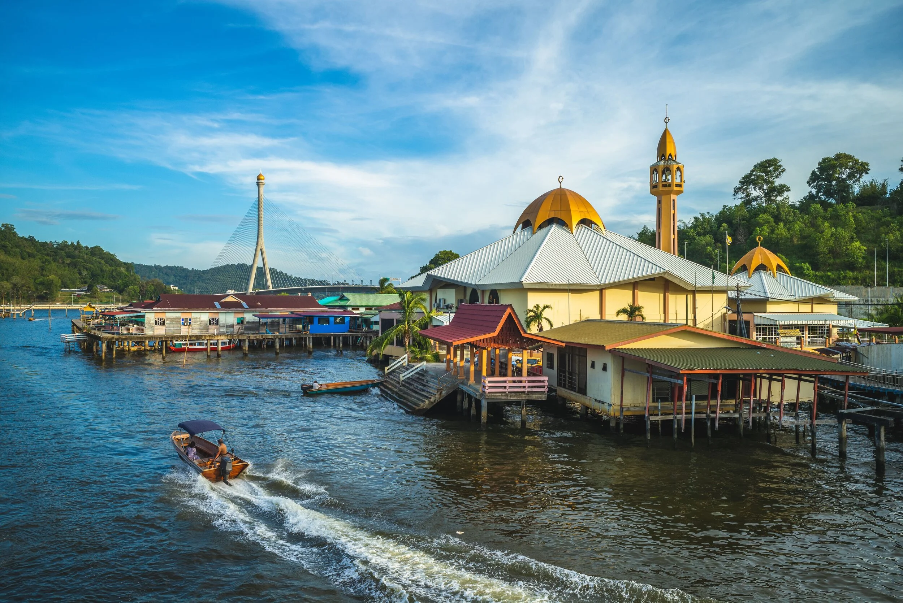

Kampong Ayer
Discover Brunei's historic water village and its traditional houses built above the river.
Discover the beauty, nature and exciting destinations of Brunei Darussalam.

Discover Brunei's historic water village and its traditional houses built above the river.

Explore Brunei's tropical rainforest and discover its rich natural environment.

Enjoy exciting rides, recreational activities and family-friendly entertainment.